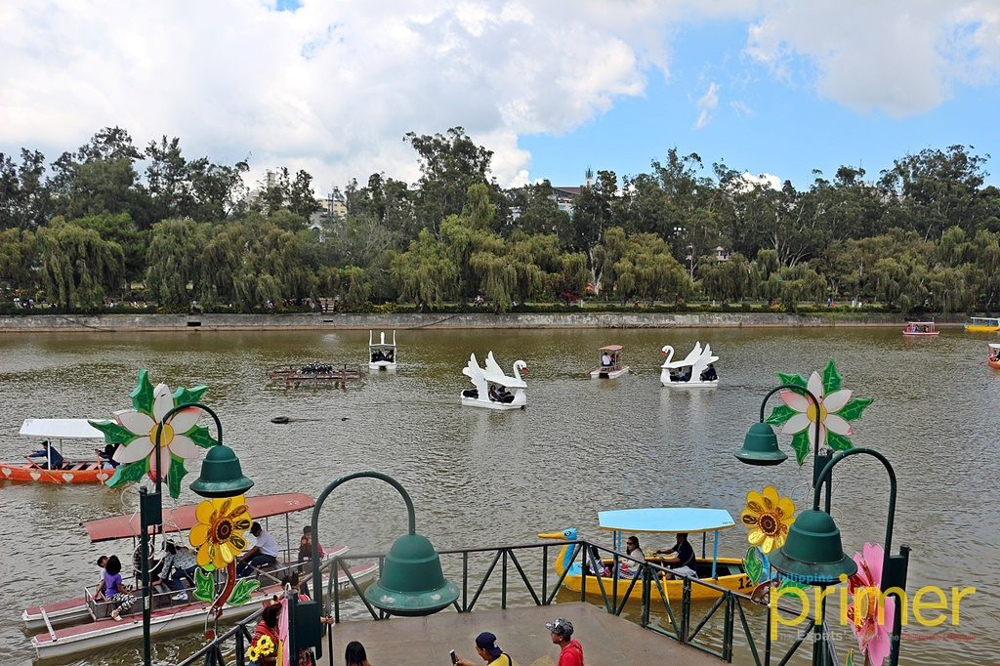
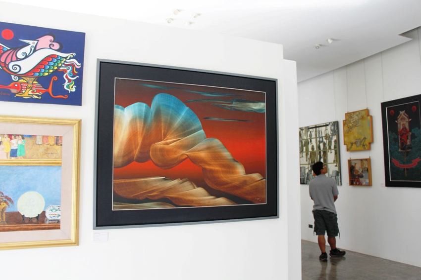
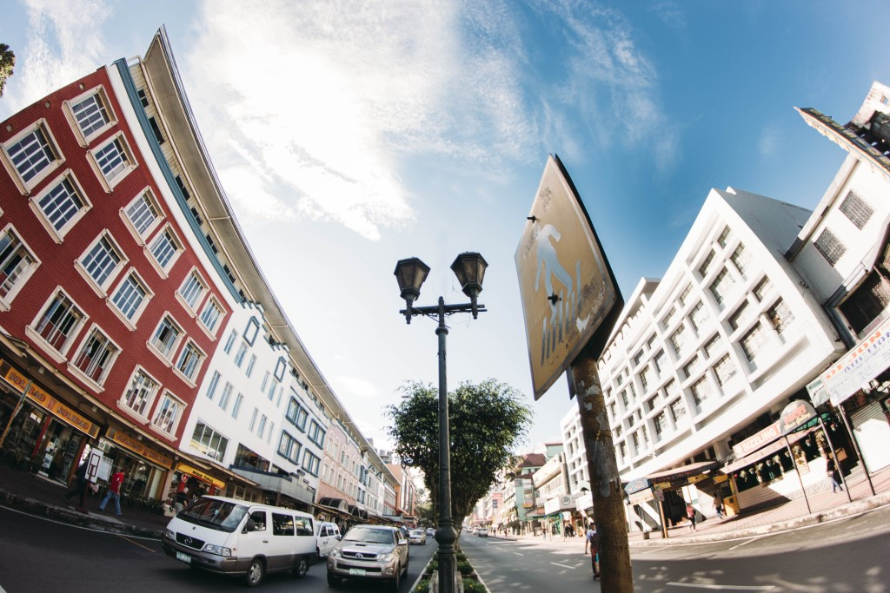

My Baguio City & La Trinidad 3-Day Trip with only Php2,500 Budget
10.1.2018
Known as the City of Pines, the Summer Capital of the Philippines, and, more recently, a UNESCO Creative City, Baguio City is now easier to get to from Metro Manila, so much so that a weekend trip isn’t as far-fetched as it once was. It’s not exactly a new tourist destination, but there are ways you can enjoy the City of Baguio even if you go through the classic tourist spots.
A classic Baguio tourist spot, Burnham Park is located in the heart of Baguio City. It has a mix of activities that will undoubtedly take you at least the whole afternoon to try. Go for a ride in one of the many boats that line the corners of Burnham Lake. You can also rent a two-seater chopper bike or a non-motorized go-kart for less than Php 100.
It’s located outside the city, but a trip to Baguio is hardly complete without visiting BenCab Museum. Located in Tuba, Benguet, it’s a museum that houses some of the works of renowned National Artist Benedict “BenCab” Cabrera. Entrance to the museum is only Php 150, but what we want you to do is to take the Eco-trail guided tour BEFORE going around the museum.
It’s not a night shot, but Baguio’s Session Road is a hotbed for anyone looking for new restaurants to visit in Baguio City. At night, it turns into a dining hotspot with its many bars and restaurants bringing in locals and tourists alike. If you want to try out a new restaurant or find a new hangout in Baguio, chances are you’ll find yourself strolling along Session Road.